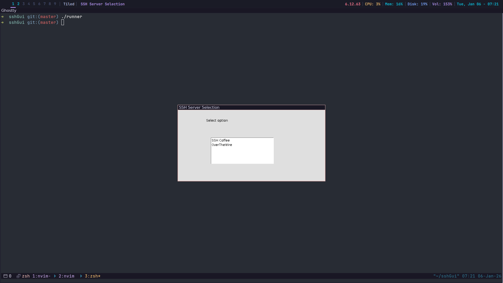

In my previous posts I have outlined two examples of servers that I have set up on my home network. However, connecting to them, and to any other machine would require typing out the full ssh command in my terminal.
I decided to attempt to implement an alternative by creating an app that would display a list of all of my servers, and allow me to select which one to connect to, then open my terminal of choice connected to my remote server.
Prior to SSHGui, I have used Zig for nearly all of my projects, but I decided I would try something new. I had heard and seen the extent to which Java is used in enterprise software, along with its mature ecosystem and broad userbase.
Despite the negative connotations regarding the language I chose it as the language for this application. Using Java was much simpler than using Zig, as searching online for solutions to problems yielded results with much greater consistency and accuracy. Along with this Java allows for functions to hang off variables which makes using the language much more fluent than in Zig where this is not the case.
My first attempt at writing a real program in Java, was a basic program to just launch an application window. Like most things throughout the SSHGui project, finding an answer to how I would go about this was not a difficult task.
I had discovered the awt library to open and control application windows using text, lists, and options, and in no time I had a "Hello World" window open, along with lists and options which functioned as expected.
After configuring the sizing of the window and list, and the position of the list I was ready to start working out how I would make this application function. I had discovered that using a KeyListener, I could define logic to be executed when the user pressed the specified key within the component the listener was listening to. I used the KeyListener to detect the Enter, Control+n, and Control+p keybindings, for selection, moving down the list and moving up the list respectively (the list had native support for arrow key navigation).
Despite my progress up to this point I was still missing the fundamental aspect that would make this application work, the connection to the servers themselves. Thankfully again I needn't look far before I found the answer I was looking for, the Runtime.getRuntime().exec() function.
This function would allow me to run any terminal command as another process on my machine, and using the -e argument when launching my terminal, I was able to open a SSH connection directly through the list when an option was selected.
Now the program functioned how I had hoped but I knew there was still improvements to be made. At the moment I was manually specifying the amount of servers, the server addresses, the names of each server and the terminal that would be used to launch the SSH connection.
With the help of Opencode to point out flaws in my implementation, I was able to construct two functions to read a config file that would specify what previously had to be hard-coded and then pass those outputs to the Runtime.getRuntime().exec() function directly. This allows for any terminal (that allows for the -e flag to run a command as the terminal opens - sorry Powershell users) and any number of servers to be specified.
SSHGui now worked fully as intended, aside from one part of the project, the runner script. I had been using this basic shell script to make running the program easier and more accessible on other linux systems.
As I was using the Sway window manager, I also used the "dotool" application to make the SSHGui window into floating mode as soon as it opened within the runner script, it also defines necessary environment variables for systems such as debian which require them to open awt applications.
Overall SSHGui has greatly improved my ability to connect to my local machines to manage and configure them as need be and I hope that it will continue to for myself and others into the future.
Edit: sshGui now allows for a variety of popular linux terminals listed on the github page, while also supporting powershell and command prompt terminals.
